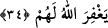
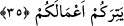

muvâfık olan, o günün kazâsı olur. Diğerleri nâfile ibadetlerdir. Allah Teâlâ’dan her
halükârda itâat ve teslimiyet istiyoruz.
34. İnkâr ve nankörlük edip Allah yoluna engel olan, sonra kâfir olarak ölenleri
Allah affetmeyecektir.
Allah ve Resûlünü “inkâr ve” bu büyük nimetlere “nankörlük edip” insanları rızây-ı
Bârî’ye ulaştırıcı en mühim vesile olan “Allah’ın yoluna engel olan, sonra kâfir
olarak ölenleri” yâni dünyadan bu hâl üzere ayrılanları “Allah” âhirette
“affetmeyecektir.” Çünkü onlar küfür ve inkâr üzere ölmüşlerdir. Öldükleri hâl ve
inanç üzere de diriltilip haşr olacaklardır.
Hadis-i şerifte “Nasıl (hangi inanç ve hal) üzere yaşarsanız öyle ölürsünüz. Nasıl
ölürseniz öyle haşrolursunuz”[72] buyrulmuştur. Gerçi bu hüküm, Bedir’de öldürülüp
bir kuyuya atılan müşrikler hakkında inmiş ise de bu, kâfir olarak ölen herkes için
genel-geçer bir hükümdür.
Buradaki kuyudan murad, Bedir günü öldürülen kâfirlerin leşlerinin atıldığı bir çukur
ve kuyudur. O gün müşriklerin su içtikleri kuyu ise malum su kuyusu olup ziyaret için
uğradığımda, o beldede ikamet eden Bedir halkından işittiğime göre, artık kuyuda pis
bir koku olup suyu içilmemektedir.
35. Siz gâlip durumda iken gevşeyip barış istemeyin. Allah sizinle beraberdir, O
sizin amellerinizi zâyi etmeyecektir.
“Siz gâlip durumda iken gevşeyip” zâfiyet göstererek “barış istemeyin.” Size
okunan âyetlerden, Allah Teâlâ’nın onların işini boşa çıkaracağı ve onları mağfiret
etmeyeceği anlaşılmıştır. Siz gevşeyip zâfiyet göstermeyin. Zira Allah kime düşman
olursa o kişi iflah olmaz. Hemen kâfirleri barış imzalamaya çağırmayın. Zira bunda bir
zillet ve aşağılık vardır. Yâni zelillik ve zayıflık işâreti olmaması için onlarla barış
yapmayı talep etmeyiniz. “Allah sizinle beraberdir, O sizin amellerinizi zâyi
etmeyecektir.” Müminlerin galip durumda olmaları Allah Teâlâ’nın onlarla beraber